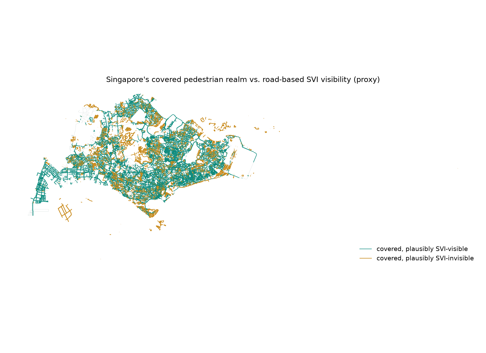
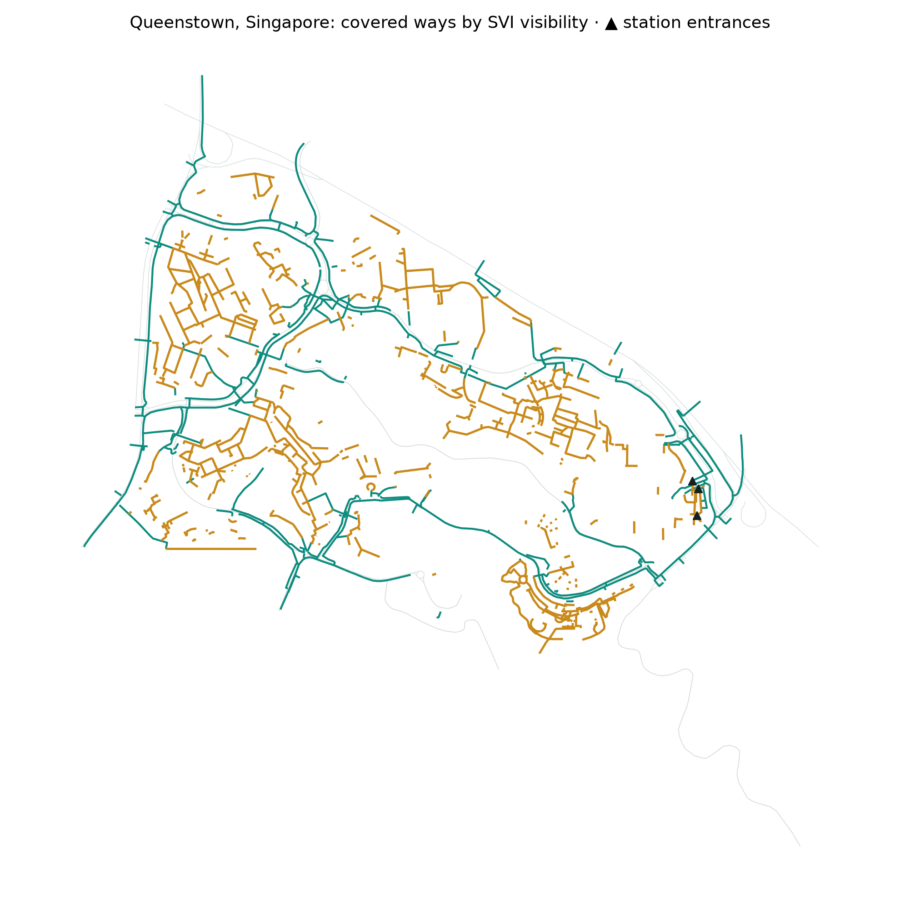
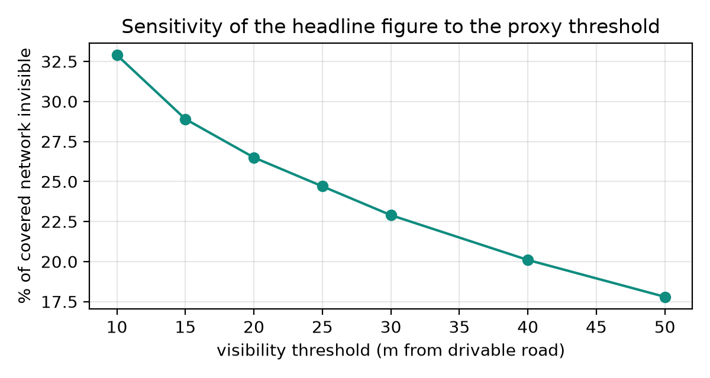

How much of Singapore's walkable public realm is invisible to road-based street-view imagery? A covered footway segment is treated as plausibly visible if it lies within 20 m of a drivable road, and plausibly invisible otherwise — a deliberately crude, transparent, reproducible proxy. The point isn't precision; it's making a data-quality argument with data.
In the accompanying writing sample (Seeing Thresholds, §1 and §4), the argument is that Singapore's pedestrian realm is genuinely three-dimensional — covered linkways, through-block connections, elevated links — and that road-based street-view imagery (SVI) is structurally blind to much of it. This notebook turns that claim into a number.
This notebook demonstrates, for the reviewer: open geospatial data acquisition (osmnx), projection and spatial operations in Singapore's national projected CRS (geopandas, shapely), network-adjacent buffer analysis, cartographic output, and an explicit limitations section — including how OSM's own under-tagging of covered walkways is itself an instance of the threshold-space missingness problem it's trying to measure.
OSM has no single "covered linkway" tag; coverage is spread across several tagging practices. Querying the union of the most common ones, and keeping provenance, becomes a finding in itself — the covered pedestrian realm doesn't have a stable identity in the world's largest open geodata project.
| Tag pattern | Typically captures |
|---|---|
highway=footway + covered=yes | sheltered walkways, linkways |
highway=path/pedestrian + covered=yes | plazas, park connectors under cover |
tunnel=building_passage | through-block connections, void-deck passages |
highway=footway + indoor=yes | mall-integrated and concourse links |
highway=corridor | interior pedestrian corridors |
A covered segment is plausibly SVI-visible if its distance to the nearest drivable road is ≤ 20 m — roughly the range at which a car-mounted camera might capture a walkway alongside the road, before occlusion is even considered. The proxy deliberately ignores actual SVI coverage of each road, occlusion by buildings and vegetation, camera orientation, walkway elevation, and interior conditions. Every one of these omissions makes the proxy optimistic about visibility — the true invisible share is almost certainly higher than what's computed here. The proxy is a floor, not an estimate.
# %% 3. Distance from every covered segment to the nearest drivable road covered["dist_to_road_m"] = covered.geometry.apply(lambda g: g.distance(drive_union)) covered["svi_visible"] = covered.dist_to_road_m <= SVI_VISIBILITY_THRESHOLD_M # → 26.5% of 5,911 km lies beyond 20 m of any drivable road


The hypothesis going in was that transit thresholds — covered, interiorised — would be especially hidden from road-based imagery. The opposite turned out to be true: covered ways within 200 m of an MRT/LRT entrance (520 entrances, 791 km of covered network) are less invisible than the island-wide average — 17% versus 26.5%.
The likely explanation is structural, not experiential: station entrances are typically sited along or adjacent to arterial roads (bus interchanges, drop-off points), which relocates the invisibility problem away from the station threshold itself and toward the deeper residential fabric — inter-block linkways and void-deck routes threading through housing estates, away from any road. It is not transit thresholds but void-deck and estate-interior thresholds that represent the empirical worst case for what current urban-analytics infrastructure can see at all.

It is not simply that road-based street-view imagery misses part of the covered network. The question that follows — whether it misses the parts that matter — is Pilot 02's.
Worth flagging, though not overclaiming: Singapore's covered pedestrian tradition has a genuine 200-year lineage. Raffles' 1822 Town Plan mandated shophouses provide a covered arcade — the five-foot way — used historically for exactly the behaviours this project studies: resting, hawking, informal commerce, waiting. Five-foot way construction stopped when shophouse-building largely ended in the 1960s, so surviving shophouse stock is a small fraction of the 5,911 km measured here; the modern total is dominated by contemporary HDB/LTA sheltered-walkway infrastructure. Read as historical precedent and conceptual lineage for "threshold affordance," not as an explanation for the present-day figure.
covered=yes is under-tagged; void-deck routes and mall-interior links are inconsistently mapped. The covered-network total is therefore an undercount — which strengthens, not weakens, the invisibility argument, but means absolute kilometre figures should be read as lower bounds.Related UAL work: coverage-and-bias research on street view imagery motivates the visibility question directly; SVI-analysis toolkits and global streetscape datasets motivate why SVI matters in the first place; network-contextual urban analysis frameworks motivate the network-adjacent framing this pilot gestures toward.